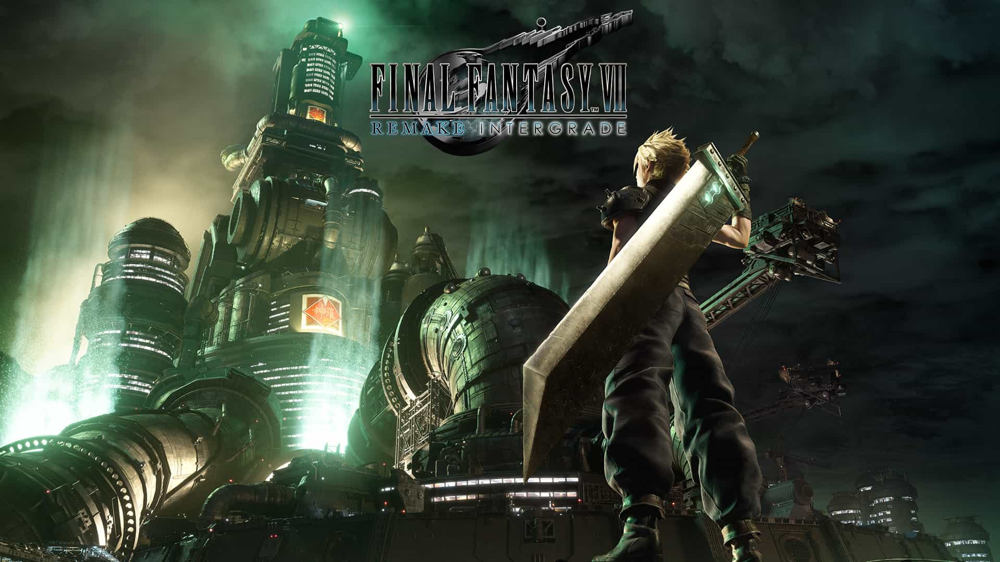

Final Fantasy 7 Remake
Postado 17 dezembro 2025 Enredo
Final Fantasy VII Remake é um RPG de ação desenvolvido e publicado pela Square Enix, lançado em 2020 para PlayStation 4 (depois para PS5 e PC). Ele é uma reimaginação moderna do clássico Final Fantasy VII (1997) 🎮✨.
O jogo se passa na cidade futurista de Midgar, controlada pela megacorporação Shinra Electric Power Company, que explora a energia vital do planeta, chamada Makō.
Você controla Cloud Strife, um ex-soldado que se junta ao grupo ecoterrorista AVALANCHE, liderado por Barret Wallace, para destruir os reatores da Shinra e impedir a destruição do planeta.
Durante a história:
- Cloud enfrenta Sephiroth, um guerreiro misterioso ligado ao seu passado
- O jogo aprofunda personagens como Tifa, Aerith e Barret
- Eventos conhecidos do jogo original são recontados, mas com mudanças narrativas importantes
⚠️ Importante: o Remake cobre apenas a parte de Midgar do jogo original, mas de forma muito mais detalhada.
⚔️ Jogabilidade
O sistema de combate mistura ação em tempo real com elementos clássicos de RPG:
- Ataques em tempo real
- Sistema ATB (Active Time Battle) para magias e habilidades
- Troca de personagens durante a batalha
- Combates estratégicos, não apenas apertar botões
Esse sistema agradou tanto fãs antigos quanto novos jogadores.
👥 Personagens principais
- Cloud Strife – protagonista, espadachim
- Tifa Lockhart – lutadora corpo a corpo
- Aerith Gainsborough – maga e curandeira
- Barret Wallace – atirador pesado
- Sephiroth – antagonista icônico da franquia
Pontes liberam novas áreas conforme a história avança.

🎵 Trilha sonora
- Reorquestrações épicas das músicas clássicas
- Novas composições
- Trilha muito elogiada pela qualidade e emoção
🎨 Gráficos e apresentação
- Gráficos modernos e detalhados
- Cinemáticas de alto nível
- Midgar apresentada de forma muito mais viva e profunda
🌟Impacto e legado
- Um dos RPGs mais elogiados da geração
- Introduziu FFVII para uma nova geração
- Início de uma trilogia (seguida por Final Fantasy VII Rebirth)
Postagens Recentes
Os jogos de videogame antigos são de grande importância, pois representam a fundação da indústria moderna de jogos, servindo como marco cultural e fonte de inspiração criativa para os desenvolvedores atuais...
Leia maisO primeiro homem a ganhar status de artista dos games foi o engenheiro americano Steve Russell, que em 1961 desenvolveu um jogo simples em um limitado (para os dias de hoje) computador...
Leia mais